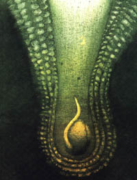

Ve Vergonsu bylo také vidìt stopy práce na díle, pro které je nadìje nezbytná. Nadìje se tedy opìt vrátila. Byly odklizeny trosky, str¾eny znièené zdi a obnoveno pìt domù. Osada mìla nyní dvacet osm obyvatel. Mezi nimi byly ètyøi mladé rodiny. Kolem nových, èerstvì omítnutých domù byly zahrady se zeleninou.
Rostlo tam v¹echno pomíchanì, ale pìknì v øadách: zelenina i kvìtiny, zelí i rù¾ové keøe, pór i hledíky, celer i anemonky. Nyní to bylo místo, kde by èlovìk mìl chu» bydlet.Odtud jsem se vydal pì¹ky. Válka, kterou jsme právì pøeèkali, nedovolila je¹tì, aby se ¾ivot plnì rozvinul. Ale Lazar vstal z
hrou. Na ni¾¹ích úboèích pohoøí jsem vidìl políèka s jeèmenem a je¹tì nezralým ¾item. V pozadí v úzkých údolích se zelenaly louky. Staèilo jen osm let, dìlících nás od té doby, a celý kraj záøil zdravím a blahobytem. Na místì zboøeni¹», která jsem vidìl v roce 1913, stojí nyní èisté a peèlivì omítnuté usedlosti, svìdèící o ¹»astném a pohodlném ¾ivotì. Zaèaly zase téct staré prameny, napájené de¹ti a snìhy, je¾ lesy zadr¾ují. Vodní toky byly regulovány. Vedle ka¾dé usedlosti, obklopené javorovým hájem, voda pøetékala z nádr¾í ka¹en na koberec svì¾í máty. Vesnice byly ponenáhlu znovu vybudovány. Z rovin, kde je pùda drahá, pøi¹li lidé a usadili se zde. Pøivedli i mláde¾, nastal ruch, probudil se smysl pro podnikání. Na cestách potkáváme dobøe vypadající mu¾e a ¾eny. Chlapci a dìvèata se umìjí smát a mají rádi venkovské slavnosti. Døívìj¹í obyvatelstvo je k nepoznání zmìnìné od té doby, co se tu ¾ije pøíjemnì. Pøipoèteme-li je k novým obyvatelùm, víc ne¾ deset tisíc osob vdèí za ¹tìstí Elzéardu Bouffierovi.